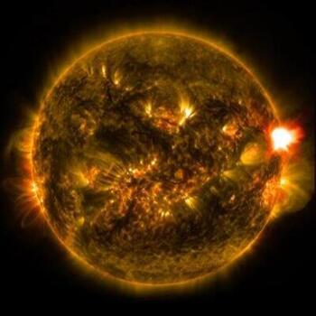
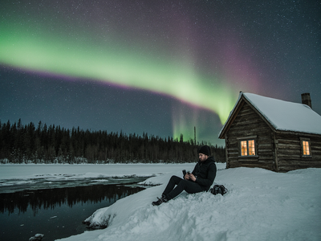
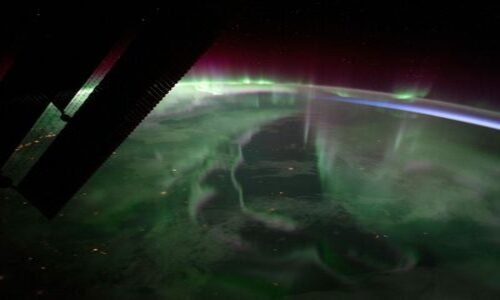

Authors: Kirsanov Vladislav, Gryshchenko Veronika, Ruzhennikov Saveliy, Pochynok Yuriy
Once upon a time, in a cozy town near the Arctic Circle, there lived a photographer named Alex. He was 35 years old and loved capturing nature's wonders with his camera. But his favorite pursuit was photographing the magical lights in the sky—auroras, also known as the Northern Lights. These shimmering green, pink, and purple bands danced like a cosmic party, and Alex chased them around the world to take photos that made everyone say, “Wow!” But why do these lights appear? Kids, it’s all because of space weather. Space weather is like Earth’s weather, but in space! It’s caused by activity on the Sun, which is 150 million kilometers away. The Sun releases bursts of energy, like solar flares (big blasts of light and radiation) or coronal mass ejections (CME)—huge clouds of charged particles speeding through space. When these particles reach Earth, they interact with our planet’s magnetic field and atmosphere, creating stunning effects… but sometimes problems too.
Alex first encountered space weather as a child, watching auroras from his backyard. Now, as a professional photographer, he uses NASA apps and websites to predict when a solar storm might hit. These storms are part of space weather and make auroras brighter and more visible. But chasing them isn’t easy! Alex faces challenges: icy nights (sometimes -30°C!), long trips to remote places, and hours of waiting in the dark. Space weather can also be unpredictable—sometimes the sky is clear, then suddenly a CME lights it up! One starry night, Alex received an alert: a powerful flare had occurred on the Sun, and a coronal mass ejection was heading toward Earth. “This could be the brightest aurora ever!” he thought, grabbing his camera, tripod, and warm boots. As he drove to a hill far from city lights, Alex wondered how this space weather affects everyone.
Because space weather isn’t just about pretty lights. It affects our lives in various ways:
- Magical Auroras: Charged particles from the Sun collide with Earth’s atmosphere, exciting gases like oxygen and nitrogen, which glow like a natural fireworks display. Alex loves this—it lets him create stunning photos that inspire kids to learn about space!
- Technical Issues: Strong space weather can damage satellites in orbit, causing GPS glitches. Imagine if Alex’s navigation failed on his way to a shoot—he might get lost! It also disrupts radio signals, so pilots must be careful, and power grids can flicker or even go out, as happened during a big storm in Canada in 1989.
- Impact on People: Farmers worry that solar storms might affect their electric irrigation systems. IT specialists protect servers from radiation spikes. Fishermen at sea might lose radio contact during a geomagnetic storm. And for astronauts on the International Space Station, space weather means extra radiation, so they retreat to safer parts of the station.
When Alex set up his camera, the sky exploded with color! Green waves swayed like a dragon’s tail, and purple curtains waved hello. Click, click—Alex snapped it all. But suddenly, his phone lost signal—space weather was playing tricks, affecting satellites. “Wow, this CME is a real troublemaker!” Alex laughed, feeling thrilled and awestruck. Directly, space weather made Alex’s job exciting, creating epic auroras to photograph. Indirectly, it impacted his life: no signal meant no calling home, and a strong storm could delay flights for his next adventure. But Alex didn’t mind—these cosmic events reminded him how connected we are to the Sun and space. In the end, Alex’s photos went viral, teaching kids worldwide about space weather. “These aren’t just storms in space,” Alex said. “They’re a reminder that our blue planet is part of a vast, exciting universe!” And they all lived happily ever after under the Sun’s watchful eye.
Loading solar flare data...
Video for reinforcement from NASA